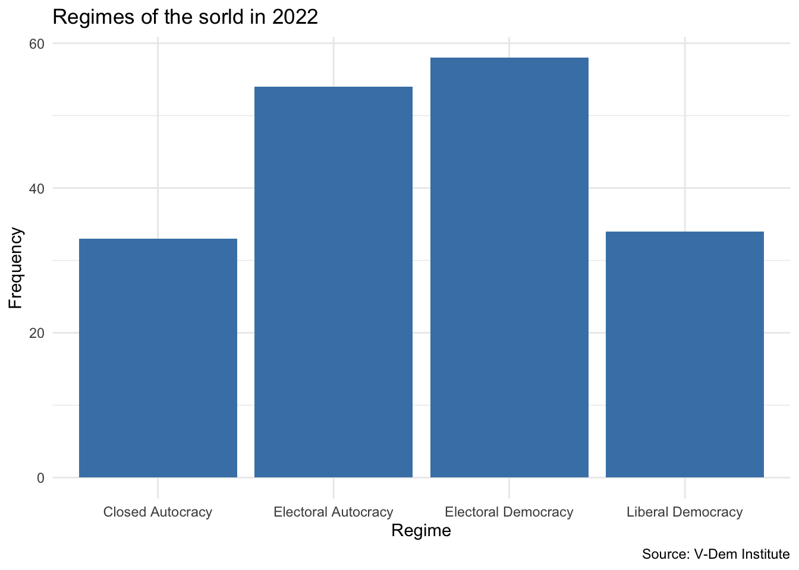
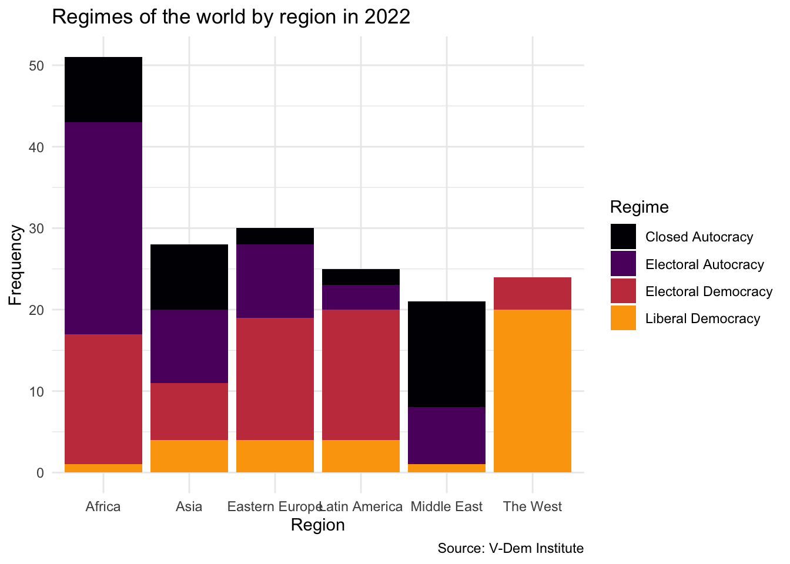
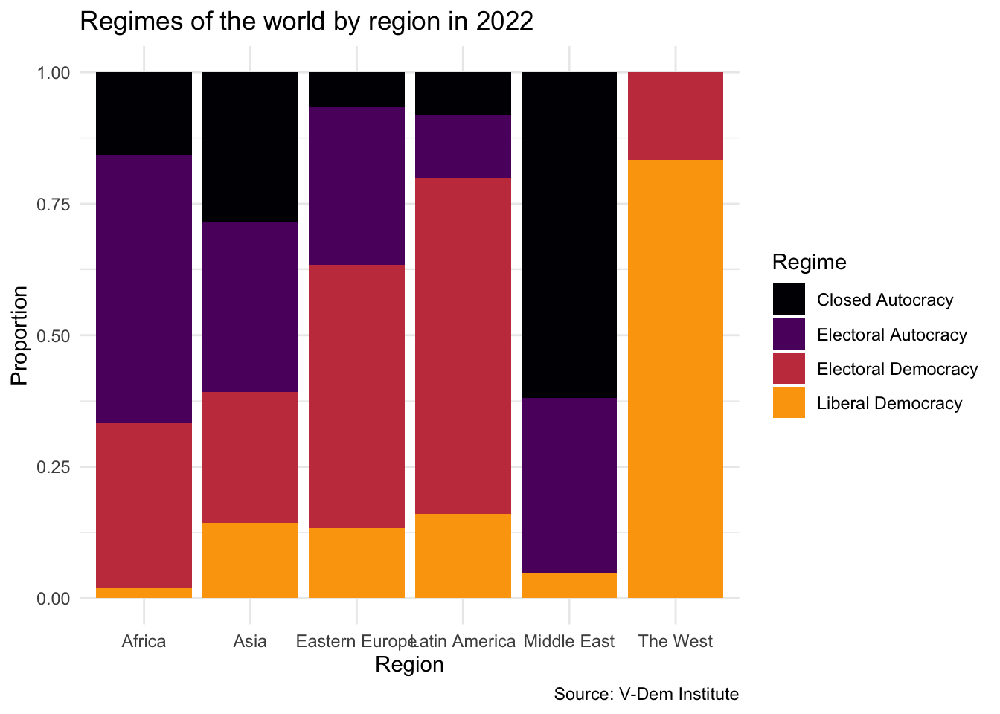
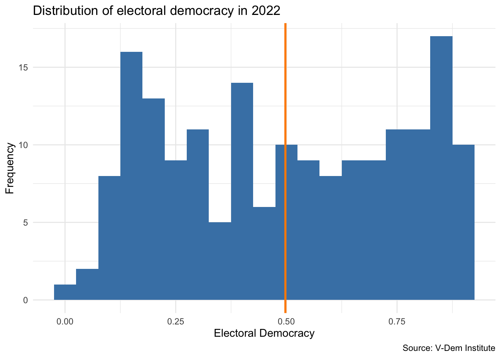

Install the ggridges package by running install.packages("ggridges") in the console.
Overview
In this lesson, we are going to talk about the distribution of data. We will discuss distributions of two different types of data - categorical and continuous.
To get a handle on the distinction between these two types of data, let’s start by discussing the difference between discrete and continuous variables. Discrete variables are those that can only take on specific values. For example, the number of children in a family is a discrete variable because you can’t have 2.5 children. Continuous variables, on the other hand, can take on any value within a range. For example, height is a continuous variable because you can be 5’6” or 5’6.5”. Have a look at this vide, which explains the difference between categorical and continuous variables in greater detail.
Categorical variables are a subset of discrete variables. They are variables that can take on one of a limited, and usually fixed, number of possible values. For example, whether a country experienced conflict in a given year is a categorical variable because it can only take on two values - yes or no.
In political science research, we often work with both types of data. And sometimes the same outcome can be conceived as either a categorical or continuous variable. For example, we might categorize political regimes as either autocratic or democratic, or we might measure the level of democracy on a continuous scale. Similarly, we might categorize countries as high-, middle- or low-income or measure wealth as GDP per capita.
To get started, let’s get started by downloading two measures of regime type in V-Dem dataset. We first load the tidyverse and vdemdata packages. We will then create a dataset for the year 2022 that includes the country name, region and two democracy measures. v2x_regime is going to be our categorical measure and v2x_polyarchy will be our continous measure. Next, we will call mutate() to recode the regime variable to replace the numeric values with the names of the regime types and to recode the region variable to replace the numeric values with the names of the regions. We will store all of this in a new dataset called vdem2022_data and take a look at the first few rows of the dataset using the glimpse() function.
library(tidyverse)library(vdemdata)vdem2022_data<-vdem|>filter(year==2022)|>select( country =country_name, regime =v2x_regime, polyarchy =v2x_polyarchy, region =e_regionpol_6C)|>mutate(regime =case_match(regime,0~"Closed Autocracy",1~"Electoral Autocracy",2~"Electoral Democracy",3~"Liberal Democracy"), region =case_match(region, # replace the values in region with country names1~"Eastern Europe", 2~"Latin America", 3~"Middle East", 4~"Africa", 5~"The West", 6~"Asia"))glimpse(vdem2022_data)
Let’s take the example of political regimes and run a little further with it. The V-Dem dataset includes a variable called v2x_regime that categorizes political regimes into four categories: closed autocracy, electoral autocracy, electoral democracy. Let’s wrangle those data and visualize the distribution of regimes in 2022.
Visualze distribution with a bar plot
Now let’s visualize the distribution of regimes in 2022 using a bar plot. The plot shows the frequency of each regime type. To create a bar plot, we use the ggplot2 package. We map the regime variable to the x-axis and use the geom_bar() function to create the bars. We also add labels to the x and y axes, a title, and a caption to provide information about the source of the data.
vdem2022_data|>ggplot(aes(x =regime))+geom_bar(fill ="steelblue")+labs( x ="Regime", y ="Frequency", title ="Regimes of the sorld in 2022", caption ="Source: V-Dem Institute")+theme_minimal()

Regime variation by region
Now let’s visualize the distribution of regimes by world region. We will create a bar plot that shows the frequency of each regime type in each region. To do this, we map the region variable to the x-axis and use the fill aesthetic to color the bars by regime type. We also add labels to the x and y axes, a title, and a caption to provide information about the source of the data.
vdem2022_data|>ggplot(aes(x =region, fill =regime))+geom_bar()+theme_minimal()+labs( x ="Region", y ="Frequency", title ="Regimes of the world by region in 2022", caption ="Source: V-Dem Institute", fill ="Regime")+scale_fill_viridis_d(option ="inferno", end =.8)

Show proportions
Finally, let’s visualize the distribution of regimes by world region as proportions rather than frequencies. This will allow us to see the relative distribution of regime types within each region. To do this, we use the position = "fill" argument in the geom_bar() function to stack the bars and show the proportions. We also add labels to the x and y axes, a title, and a caption to provide information about the source of the data.
vdem2022_data|>ggplot(aes(x =region, fill =regime))+geom_bar(position ="fill")+theme_minimal()+labs( x ="Region", y ="Proportion", title ="Regimes of the world by region in 2022", caption ="Source: V-Dem Institute", fill ="Regime")+scale_fill_viridis_d(option ="inferno", end =.8)

Continuous Distributions
Now we can take the exact same concept, regime type, and measure it on a continuous scale. The V-Dem dataset includes a variable called v2x_polyarchy that measures the level of electoral democracy in a country on a continuous scale from 0 to 1. Let’s wrangle those data and visualize the distribution of polyarchy in 2022.
Measures of central tendency
One thing we want to do when exploring a continuous distribution is to look at measures of central tendency. These include the mean and median of the distribution. The mean is the average value of the variable, while the median is the middle value of the variable when it is sorted in ascending order.
Let’s calculate the mean of the polyarchy variable by calling summarize() and mean() on the polyarchy socre.
We notice that for polyarchy the mean and median are similar. This suggests that the distribution of polyarchy is symmetric, meaning that the values are evenly distributed around the center of the distribution.
Measures of Spread
In addition to measures of central tendency, we also want to look at measures of spread in the distribution. Measures of spread give us information about how the values of the variable are distributed around the center of the distribution.
One common measure of spread for a continuous distribution is the standard deviation, which measures the average distance of each data point from the mean of the distribution. A larger standard deviation indicates that the values of the variable are more spread out around the mean, while a smaller standard deviation indicates that the values are closer to the mean.
Other measures of spread include the minimum and maximum values of the variable and the interquartile range (IQR), which is the range of values that fall between the 25th and 75th percentiles of the distribution. The IQR is a measure of the spread of the middle 50% of the data.
Let’s calculate the minimum and maximum values of the polyarchy variable:
vdem2022_data|>summarize(min =min(polyarchy), max =max(polyarchy))
min max
1 0.015 0.915
Now let’s calculate the interquartile range (IQR) of the polyarchy variable. We will also calculate the legnth of the IQR, which mesures the difference between the 75th and 25th percentiles.
Now let’s visualize the distribution of polyarchy in 2022 using a histogram. A histogram is a graphical representation of the distribution of a continuous variable. To create a histogram, we use the ggplot2 package. We map the polyarchy variable to the x-axis and use the geom_histogram() function to create the bars. We also add labels to the x and y axes, a title, and a caption to provide information about the source of the data.
mn<-mean(vdem2022_data$polyarchy)ggplot(vdem2022_data, aes(x =polyarchy))+geom_histogram(binwidth =.05, fill ="steelblue")+labs( x ="Electoral Democracy", y ="Frequency", title ="Distribution of electoral democracy in 2022", caption ="Source: V-Dem Institute")+geom_vline(xintercept =mn, linewidth =1, color ="darkorange")+theme_minimal()

Another way to visualize the distribution of the polyarchy score is by using a box plot. A box plot is a graphical representation of the distribution of a continuous variable that shows the median, quartiles, and outliers of the distribution. To create a box plot, we use the geom_boxplot() function in the ggplot2 package and mapping the polyarchy variable to the y-axis.
Code
ggplot(vdem2022_data, aes(x ="", y =polyarchy))+geom_boxplot(fill ="steelblue")+labs( x ="", y ="Electoral Democracy", title ="Distribution of electoral democracy in 2022", caption ="Source: V-Dem Institute")+theme_minimal()
Calculating Statistics by Groups
Sometimes it is useful to calculate statistics for different groups within a dataset. For example, we might want to calculate the mean and median of the polyarchy variable for each world region. We can do this by using the group_by() and summarize() functions in the dplyr package.
# A tibble: 6 × 3
region mean_dem median_dem
<chr> <dbl> <dbl>
1 Africa 0.403 0.377
2 Asia 0.423 0.412
3 Eastern Europe 0.537 0.564
4 Latin America 0.607 0.685
5 Middle East 0.232 0.208
6 The West 0.856 0.855
To visualize the distribution of polyarchy by region, we can create a ridge plot. A ridge plot is a type of density plot that displays the distribution of a continuous variable for different groups. To create a ridge plot, we use the geom_density_ridges() function from the ggridges package and map the polyarchy variable to the x-axis and the region variable to the y-axis.
library(ggridges)ggplot(vdem2022_data, aes(x =polyarchy, y =region, fill =region))+geom_density_ridges()+labs( title ="Distribution of electoral democracy by region in 2022", x ="Electoral Democracy", y ="Region", fill ="Region", caption ="Source: V-Dem Institute", legend ="Region")+scale_fill_viridis_d()+theme_minimal()